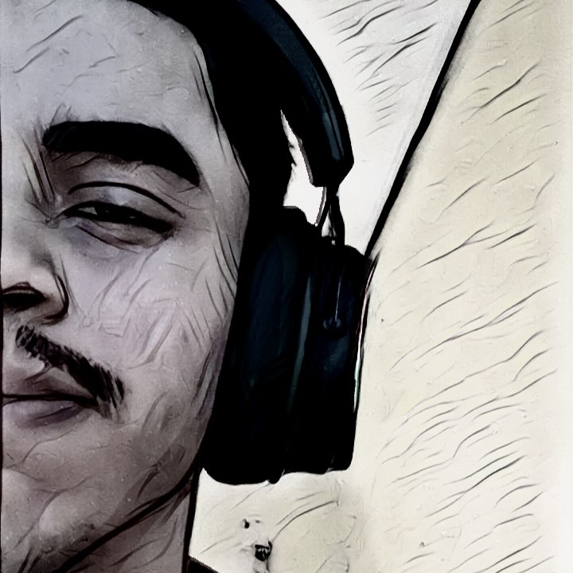
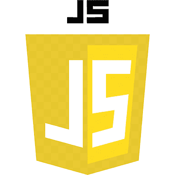

Sobre mim
Olá, meu nome é Luiz Luan Barbosa de Sousa, tenho 21 anos, e busco consistentemente a minha primeira oportunidade como um Desenvolvedor Front-End júnior. Tenho um objetivo concreto de me tornar um Desenvolvedor full-stack. Nas minhas horas de lazer, eu amo assistir animes, jogar Valorant, escutar música, ficar em chamadas via Discord com os meus amigos... Resumindo, sou uma pessoa bem tranquila e estou focado fielmente em meus objetivos de vida. Para saber mais sobre mim e as minhas atividades, confira as minhas redes sociais acima :P.
Habilidades:


- 